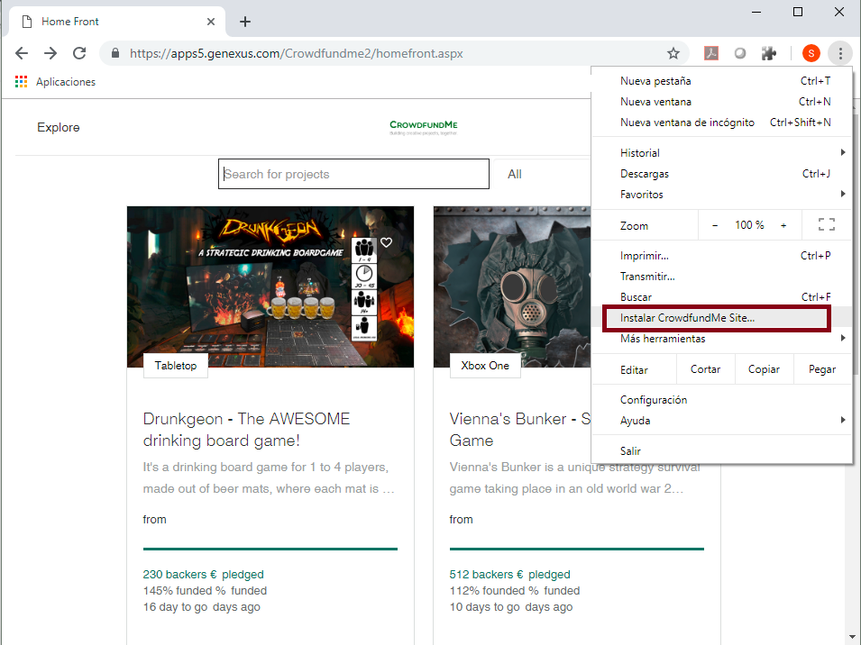
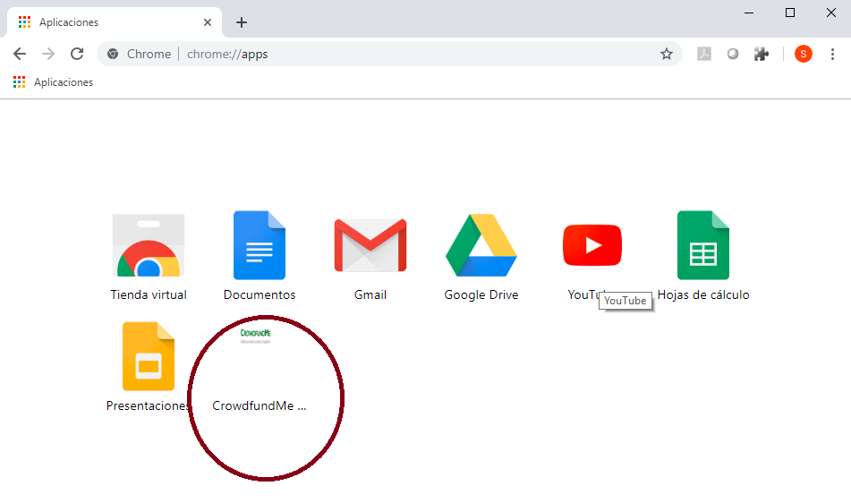
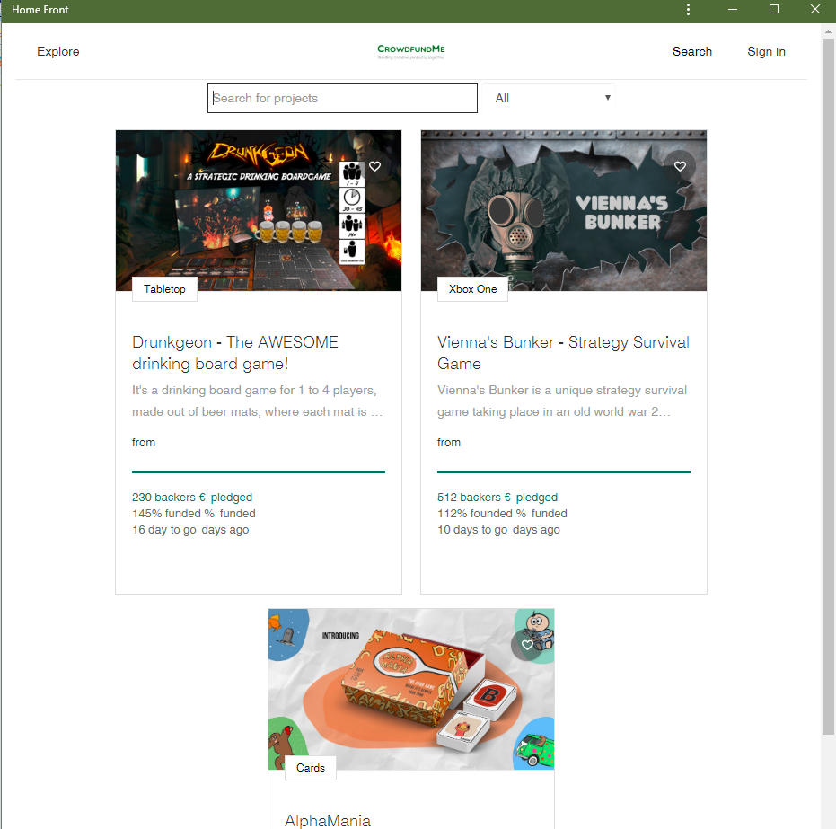

Progressive web apps are a hybrid of regular web pages (or websites) and a mobile application. They combine the flexibility of the web with the experience of a native application. Their main aim is reaching more clients by giving them a deeply engaging user experience when they land in the web site. In fact, PWAs allow getting a native-like experience from the web. Features of a PWAProgressive Web Apps are installable and live on the user's home screen, without the need for an app store. Reliable
Fast
Engaging
ExampleThe following is a PWA application. Note that you have the option to install the application locally.  After having installed it, the application can be accessed directly from the Application Chrome menu (and a shortcut is created):  It will be launched as follows (without a navigation bar):  Temporary Limitations
AvailabilityThis feature is available since GeneXus 16 upgrade 5.
|